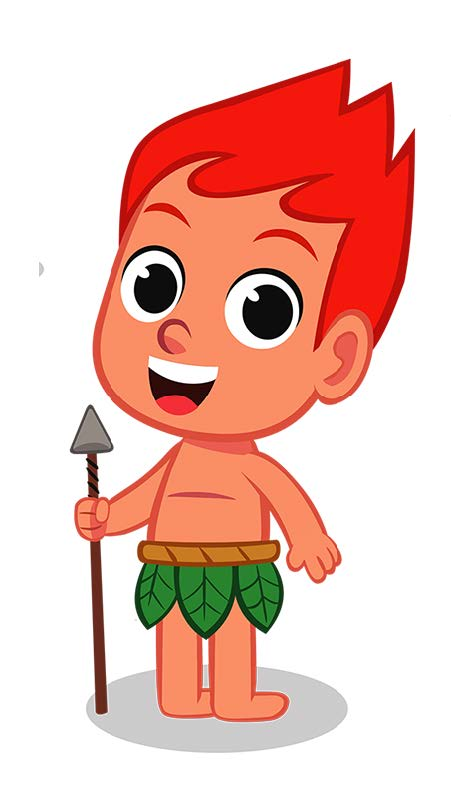

O curupira é um personagem do folclore conhecido por proteger as florestas. Sua lenda tem origem nas histórias de povos indígenas, sendo muito famosa no norte do Brasil. Segundo a lenda, o curupira é um menino baixinho de cabelos vermelhos, cuja característica principal são os pés virados para trás, que servem para enganar invasores que erram o caminho ao seguir suas pegadas na floresta. Os indígenas acreditavam que o curupira aterrorizava aqueles que entravam na floresta para caçar ou derrubar árvores. Uma forma do curupira atormentar os caçadores é assoviar sem parar. Para fugir dele, é preciso dar um nó em um pedaço de cipó. Agora, achar o curupira por conta própria na floresta é quase impossível, já seus pés ao contrário sempre enganam sobre seu caminho.
